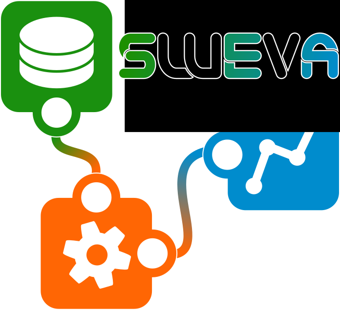

Simple Web-based Visual Analytics
SWeVA is a collaborative framework for design and execution of reusable data processing components in the domain of visual analytics.
It consists of:
- An interactive collaborative editor to design where to get data and what to do with it.
- An execution engine that handles the data processing using web services and local computation.
- A configurable presenter that allows visualization and interaction with the data.
You can directly start with your own projects using the collaborative editor.